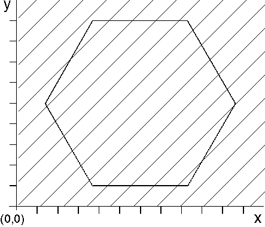

The pattern reference point is the point from which the area's fill-pattern spreads horizontally and vertically. The lower-left corner of the pattern is aligned on this point. The pattern reference point has a default value of (0,0), and is expressed in world coordinates. Applications can determine the pattern reference point with GpiQueryPatternRefPoint. Applications can specify the pattern reference point with GpiSetPatternRefPoint; however, this should not be done inside an area. The pattern reference point does not have to be within the boundary of the area. The following figure shows an area that was filled using the default pattern reference point. 
The Pattern Reference Point
The pattern of diagonal lines is aligned with the pattern reference point (0,0). When the picture is displayed or printed, only the hexagon will be filled.
Use of the default reference point causes the diagonal lines of the pattern to intersect the area boundary at specific points. If you change the reference point to (0,4), for example, the pattern shifts upward, and the points of intersection with the area boundary are different. Although the reference point is outside the area, when an application displays or prints the picture, only the area is filled.